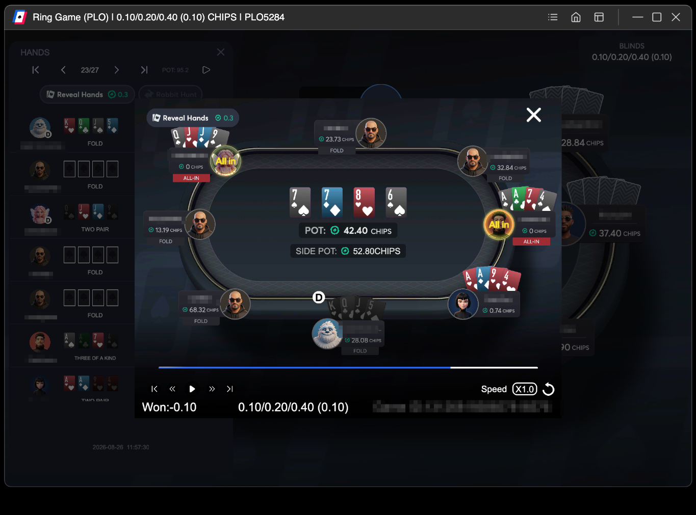

Screenshot the whole replay window
That is the only thing you have to get right. Everything else the page does for you.
The reader finds the community cards first and measures everything else against them — where the hands panel is, how big a card should be, which seat is yours. So the board has to be in the picture, along with the panel down the left. A crop of just somebody's hand has nothing to measure against and will not read.

Getting it in
- Drag the image file onto the dashed box, or
- copy the screenshot and paste it anywhere on the page, or
- tap the dashed box to pick a file.
It fills in the board and every hand the replay is showing, works out which hand is yours, and puts the equity under each one. Nothing is uploaded — the picture is read in your browser and never leaves it.
If a card comes back blank
A card the reader is not sure of is left empty rather than guessed at, so a blank slot means "could not read this one", never "read it wrongly". Tap the empty slot and then the card in the deck along the top to fill it in.
The client dims cards it has folded — sometimes almost to black. Those are the ones most likely to come back blank. Nothing is wrong with your screenshot when that happens.
What the numbers mean
- Win / Tie under each hand: how often that hand wins the pot outright, and how often it splits.
- Your equity along the top: how your own hand stood before the flop, on the flop and on the turn — a replay shows you the finished board, so this is the only way to see how the hand actually ran.
- Outs, if switched on: on the turn, the river cards that win it; on the flop, the turn cards that leave you ahead of everyone else.
Every number is counted, not sampled. The same spot always gives the same answer, to the last decimal.